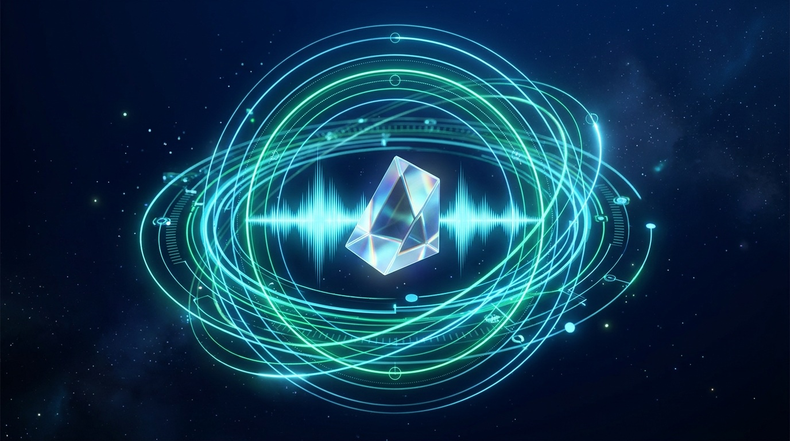

The complete 12-page visual handbook to studio-grade voice cloning, W3C phoneme lexicons, multi-speaker narration, 175-language lip-sync dubbing, and real-time interactive avatars with ElevenLabs, HeyGen, and Gemini TTS.
gemini-3.8-flash-tts dialogues backed by C2PA guardrails.Early text-to-speech tools forced teams to choose between robotic voices and stiff talking heads. Modern production workflows unify three distinct layers: Voice & Lexicon Control (ElevenLabs and Gemini TTS), Visual Lip-Sync & Digital Twins (HeyGen), and Consent & Provenance.
Both pre-rendered avatars and live WebRTC presenters derive their micro-expressions, blinks, head nods, and mouth shapes directly from your vocal track. When you nail clean studio pacing, natural breathing room, and accurate phoneme pronunciation first, the visual avatar effortlessly mirrors real human cadence instead of fighting unnatural syllabic timing.
AI voice and avatar models replicate every acoustic and lighting flaw in your source files. Follow these exact engineering baselines before uploading a single training minute, then match your project to the right tier.
24-bit WAV at 44.1 kHz or 48 kHz (skip MP3 uploads).-23 dB to -18 dB RMS loudness; keep peaks at -6 dB to -3 dB.6–12 in at 15-deg off-axis with pop filter; 1–3 hrs (min 30m) solo 10–30m WAVs.1080p baseline or crisp 4K at 30 fps in 16:9 landscape on a locked tripod.15s instant or 2 min Digital Twin) with zero cuts.| Platform / Model | Tiers & Credit Economics | Core Technical Capabilities | Best Production Fit |
|---|---|---|---|
ElevenLabseleven_v3 / v4 / Flash |
Free ($0) • Starter ($6, IVC + Dub Studio) • Creator ($22, PVC) • Pro ($99, 44.1kHz PCM) • Scale ($299) • Biz ($990). API: ~$0.08/1K (v3/v4), ~$0.04/1K (Flash). |
Professional Voice Cloning, Voice Design v3, Audio Tags ([laughs]), W3C .pls IPA lexicons, Multi-Cast Studio, ~75ms Flash latency. |
Studio audiobooks, podcast synthesis, brand-locked voiceovers, and real-time voice agent pipelines. |
| HeyGen Studio Digital Twin & Avatar IV |
Free ($0) • Creator ($29, 600 cr, 1080p) • Pro ($49+, 4K) • Biz ($149+, 5 twins, SCORM). Avatar IV: ~16 cr/m (Photo) or ~31 cr/m (Video). | Digital Twin likenesses, Avatar IV photo-to-video emotion & gestures, multi-scene slide studio, and LMS/SCORM export. | Founder updates, sales outreach, course lessons, and talking-head explainers from script or WAV. |
| HeyGen Video Translate 175+ Languages |
Included in paid plans; API PAYG ~$0.0333/s (Speed Mode) or ~$0.0667/s (Precision Mode). | Multi-speaker separation, speaker voice cloning, pixel-level mouth lip-sync re-animation, Speed Sync, and Brand Glossary. | Localizing product demos, webinars, and executive town halls globally without reshooting video. |
| HeyGen LiveAvatar WebRTC SDK |
Streaming credits: LITE ~1 cr/min (video only); FULL ~2 cr/min; free dev testing via is_sandbox: true. |
Sub-second WebRTC streaming via @heygen/liveavatar-web-sdk, ephemeral token auth, FULL managed or LITE BYO-agent mode. |
Interactive website concierges, live product guides, virtual tutors, and real-time support desks. |
Google Gemini TTSgemini-3.8-flash-tts |
Pay-per-use Gemini API & CLI (gemini-api tts); zero clone training overhead. |
Native multi-speaker synthesis (Kore, Puck, Charon, Fenrir, Aoede), natural style prompts, 24 kHz WAV output. |
Rapid multi-host dialogue prototyping, scripted developer pipelines, and zero-setup audio output. |
gemini-3.8-flash-tts or ElevenLabs Flash, lock your glossary and pauses, and render visual avatars only once your audio master is final.
Whether you are polishing a multi-chapter ElevenLabs Studio project or proofing a 175-language HeyGen Video Translate cut, every high-output session revolves around these 7 numbered controls.
KestrelAI → /ˈkɛstrəl/[warmly]), calibrate Stability/Similarity, and attach IPA pronunciation rules.44.1 kHz PCM WAV audio, 1080p/4K MP4 video, or SRT subtitles with embedded C2PA and SynthID signatures.
.pls Lexicons
Use Voice Design v3 to invent original brand voices from a text prompt, train a dedicated Professional Voice Clone (PVC) from studio recordings, and enforce bulletproof pronunciation with W3C .pls XML dictionaries.
.pls phoneme lexicons lock exact syllable stress for every brand term and technical acronym.
.pls Dictionary<?xml version="1.0" encoding="UTF-8"?>
<lexicon version="1.0" alphabet="ipa" xml:lang="en-US"
xmlns="http://www.w3.org/2005/01/pronunciation-lexicon">
<lexeme>
<grapheme>KestrelAI</grapheme>
<phoneme>/ˈkɛstrəl eɪ.aɪ/</phoneme>
</lexeme>
<lexeme>
<grapheme>kubectl</grapheme>
<alias>kube control</alias>
</lexeme>
</lexicon># Upload PLS file (returns id + version_id)
curl -X POST "https://api.elevenlabs.io/v1/pronunciation-dictionaries/add-from-file" \
-H "xi-api-key: $ELEVENLABS_API_KEY" \
-F "file=@brand_lexicon.pls;type=text/xml" \
-F "name=Brand Lexicon v1"
# Reference dictionary locator inside eleven_v4 / v3 TTS
curl -X POST "https://api.elevenlabs.io/v1/text-to-speech/$VOICE_ID" \
-H "xi-api-key: $ELEVENLABS_API_KEY" -H "Content-Type: application/json" \
-d '{"text":"Deploy KestrelAI with kubectl.","model_id":"eleven_v4",
"pronunciation_dictionary_locators":[{"pronunciation_dictionary_id":"DICT_ID","version_id":"VER_ID"}]}'gemini-3.8-flash-ttsMove from isolated single-sentence clips to cohesive multi-chapter audiobooks, two-host podcasts, and automated developer dialogues—balancing expressive Eleven v3 direction with fast Gemini CLI scripting.
Import EPUB/PDF manuscripts to auto-detect characters for Multi Cast narration. Swapping one character’s voice updates all chapters globally, while paragraph locks protect approved takes.
Steer delivery inside brackets—[curious], [sighs], [whispers], [rushed]—replacing brittle legacy SSML. Stick to 1–2 cues per block and use ellipses for natural pauses.
Lower Stability (35–50%) lets Audio Tags shine expressively; higher Stability (70%+) keeps IVR instructions uniform. Keep Style Exaggeration near 0–15% to avoid latency spikes.
# Directing a two-host product reveal (eleven_v3)
[curious] Wait, did the Spanish dub really
preserve Maya's exact laugh?
[warmly] Every syllable... [sighs] and we did not
need a single studio reshoot. [excited] Listen
to the Japanese cut next!# Outputs 24 kHz WAV via gemini-3.8-flash-tts
gemini-api tts "Maya: Our global onboarding cut \
went live in twelve languages today. \
Leo: Zero reshoots and crisp lip sync?" \
-m gemini-3.8-flash-tts \
--multi-speaker "Maya=Kore,Leo=Puck" \
--out ./onboarding_dialogue.wavgemini-3.8-flash-tts Voice Personas & Studio Roles| Voice Name | Acoustic Profile | Ideal Multi-Speaker Role | CLI / API Mapping Tip |
|---|---|---|---|
Kore |
Firm, confident, crystal-clear articulation | Lead product host, structured support agent, IVR anchor | Default gemini-api tts voice |
Puck |
Upbeat, bright, energetic tempo | Co-host banter, launch promos, dynamic explainer intros | Pair with Kore for fast dialogue |
Charon |
Deep, resonant, grounded baritone | Executive briefings, technical engineering walk-throughs | Great contrast vs bright hosts |
Fenrir |
High-energy, expressive, dramatic range | Trailer hooks, animated characters, high-stakes debates | Keep turns concise to preserve punch |
Aoede |
Breezy, smooth, zero listener fatigue | Long-form audiobooks, meditation guides, doc narration | Ideal for 5+ min solo chapters |
gemini-3.8-flash-tts via CLI or REST multiSpeakerVoiceConfig, the prefix inside your text (such as Maya:) must match the key in --multi-speaker "Maya=Kore,Leo=Puck" character-for-character—otherwise the entire script collapses into one fallback voice.
Transform one continuous studio recording—or even a single portrait photo—into localized talking-head video across 175+ languages and dialects, complete with natural micro-expressions and pixel-accurate mouth movement.

15s instant clip or 2 min 1080p/4K tripod take—capturing posture, hand gestures, and room depth.Go beyond static MP4 files with HeyGen LiveAvatar—streaming real-time, two-way conversational digital presenters over WebRTC in sub-second latency for interactive onboarding, virtual tutors, and support desks.
HeyGen operates the complete turn-taking stack: Voice Activity Detection (VAD), Speech-to-Text, LLM persona prompts, memory, TTS, and video streaming. Launch interactive kiosks or support widgets rapidly without managing custom voice orchestration servers.
Bring your own conversational pipeline (ElevenLabs Flash/Conversational Agents, LiveKit, Pipecat, or Gemini) and use LiveAvatar purely as the synchronized visual renderer—keeping 100% control over custom RAG tools, lexicons, and latency.
// app/api/liveavatar-token/route.ts (Server-side only — never expose X-API-KEY in browser)
export async function POST() {
const res = await fetch("https://api.liveavatar.com/v1/sessions/token", {
method: "POST",
headers: { "X-API-KEY": process.env.HEYGEN_API_KEY!, "Content-Type": "application/json" },
body: JSON.stringify({
mode: "LITE",
is_sandbox: process.env.NODE_ENV !== "production", // Free testing without burning credits!
avatar_id: "dd73ea75-1218-4ef3-92ce-606d5f7fbc0a"
})
});
const data = await res.json();
return Response.json({ sessionToken: data.data.session_token });
}// Install: npm install @heygen/liveavatar-web-sdk
import { LiveAvatarSession, SessionEvent } from "@heygen/liveavatar-web-sdk";
async function startConcierge(videoEl: HTMLVideoElement) {
const { sessionToken } = await fetch("/api/liveavatar-token", { method: "POST" }).then((r) => r.json());
const session = new LiveAvatarSession(sessionToken, {
autoKeepAlive: true, // Prevents idle WebRTC timeout during user pauses
voiceChat: { defaultMuted: false }
});
session.on(SessionEvent.SESSION_STREAM_READY, () => { session.attach(videoEl); });
await session.start();
return session; // Call await session.stop() on unmount
}"is_sandbox": true so automated UI tests never burn production streaming minutes.
2. Enforce short-lived token minting per user session behind rate limits.
3. Enable browser acoustic echo cancellation (echoCancellation: true) on mic capture so avatar speech never triggers false self-interruptions.
Each tested recipe pairs the ideal model, configuration flags, and pacing rule for common studio, localization, and developer workflows.
| Workflow Recipe | Stack & Tier Target | Exact Settings & Tags | Deliverable & Quality Win |
|---|---|---|---|
| 1. Global SaaS Keynote Dub EN → ES, JA, DE |
HeyGen Video TranslateCreator / Pro or API |
Precision Mode, speaker isolation ON, Brand Glossary locked, 1.2s scene end pauses. |
1080p/4K localized videos with preserved speaker timbre & crisp lip sync. |
| 2. Two-Host Weekly Briefing 2–5 min audio episode |
ElevenLabs Studio Multi Cast or gemini-3.8-flash-tts |
Map Host=Kore & Guest=Puck (or eleven_v3 with 1–2 [curious] / [laughs] tags). |
Zero-stitching conversational WAV ready for RSS, Slack, or slide decks. |
| 3. Medical / Fintech Narrator Zero acronym mistakes |
ElevenLabs PVC (Creator+)Model: eleven_v4 / v3 |
Upload W3C .pls with case-sensitive IPA <phoneme> + <alias> rules; Stability 55%. |
100% consistent pronunciation across hundreds of product help videos. |
| 4. Mascot / Photo Explainer No camera required |
ElevenLabs WAV + HeyGen Avatar IV (Photo Look) |
Render expressive 44.1 kHz WAV first; upload audio directly into Avatar IV portrait (~16 cr/m). |
Animated character or founder portrait with natural head tilts & emotion. |
| 5. Live Onboarding Concierge Embedded web tour |
HeyGen LiveAvatar (LITE) + ElevenLabs Flash v2.5 |
Mint token with is_sandbox: true, set autoKeepAlive: true, ~75ms Flash TTS stream. |
Sub-second interactive video guide answering live customer questions. |
#!/usr/bin/env bash
set -euo pipefail
# Step A: Rapidly audition a 2-speaker product script locally with Gemini 3.8 Flash TTS
gemini-api tts "Maya: Welcome to KestrelAI 4.0. Leo: Let us demo live 175-language dubbing." \
-m gemini-3.8-flash-tts \
--multi-speaker "Maya=Kore,Leo=Puck" \
--out ./draft_mix.wav
# Step B: Render final studio WAV via ElevenLabs using your locked W3C PLS pronunciation dictionary
curl -sS -X POST "https://api.elevenlabs.io/v1/text-to-speech/$ELEVEN_PVC_ID?output_format=pcm_44100" \
-H "xi-api-key: $ELEVENLABS_API_KEY" -H "Content-Type: application/json" \
-d '{"text":"[warmly] Welcome to KestrelAI 4.0.","model_id":"eleven_v4",
"voice_settings":{"stability":0.45,"similarity_boost":0.85,"style":0.15},
"pronunciation_dictionary_locators":[{"pronunciation_dictionary_id":"$PLS_ID","version_id":"$PLS_VER"}]}' \
--output ./master_44k.pcm-16 LUFS (stereo) or -19 LUFS (mono) with a gentle -1.5 dBTP true-peak ceiling before uploading to HeyGen or LMS portals so mobile and laptop speakers play every language at uniform volume.
Responsible synthetic media protects real speakers, builds audience trust, and satisfies regulatory disclosure mandates such as EU AI Act Article 50. Both ElevenLabs and HeyGen enforce strict multi-layer provenance controls.
<30s live webcam or QR smartphone video where the talent reads the exact on-screen consent prompt word-for-word.| Safety Layer | ElevenLabs Protection | HeyGen Protection | Team Operating Policy |
|---|---|---|---|
| Identity & Likeness Lock | Live voice captcha verification; blocks unauthorized public figure clones. | Mandatory <30s live consent video; Enterprise pre-recorded API upload gated. |
Store signed talent release defining geography, duration & revocation rights. |
| Workspace Role Control | Scale/Business shared seats with scoped custom voice permissions. | Business/Enterprise SSO, SAML, MFA & tiered avatar risk permissions. | Lock executive Digital Twins to approved producers; disable open export for guests. |
| Runtime Guardrails | Prompt-injection filtering and output content validators on voice agents. | Automated moderation screens political, deceptive, or harmful scripts. | Route sensitive customer-facing agent scripts through legal glossary rules. |
| Disclosure & Compliance | Imperceptible watermarking + AI Speech Classifier auditability. | SOC 2 Type II, GDPR biometric lifecycle controls & provenance headers. | Display clear AI-generated captions / C2PA manifests for EU Art. 50 compliance. |
Each platform excels at a specific link in the creative chain. Combine fast Gemini TTS script prototyping, ElevenLabs phoneme-locked voice mastery, and HeyGen visual localization into one repeatable global pipeline.
[warmly] tags and W3C .pls rules—then upload the finished WAV stem into HeyGen so your Digital Twin or Avatar IV character animates directly to true vocal nuance..pls XML dictionary from it for English masters and paste the exact same locked terms into HeyGen’s Video Translate Brand Glossary before launching 10-language batches.gemini-3.8-flash-tts as the voice engine feeding HeyGen LiveAvatar LITE mode so your website concierge shares the exact same cloned brand voice heard in your marketing videos.gemini-api tts. Crafting emotion-rich narration, audiobooks, or phoneme-locked clones? Open ElevenLabs Studio. Translating camera footage or animating a Digital Twin? Launch HeyGen. Embedding a live conversational video guide? Deploy LiveAvatar WebRTC.
Diagnose the seven most frequent voice cloning, pronunciation, lip-sync, and streaming failures in seconds—then run the 6-point checklist before releasing global campaigns.
| Symptom / Failure Mode | Root Cause & Immediate Fix |
|---|---|
| Cloned PVC voice sounds hollow, metallic, or noisy | Training files contained room reverb, HVAC hum, or heavy noise-gate/limiter plugins. Re-record raw 24-bit / 48 kHz WAV in a damped room at -20 dB RMS without effects. |
Brand name still mispronounced despite .pls upload |
<grapheme> tags are case-sensitive or the request targeted a non-phoneme model. Include both capitalized and lowercase entries (or <alias> fallbacks) and run eleven_v4 / v3. |
Audio Tags like [laughs] are spoken aloud as words |
Script ran on a legacy model that lacks Eleven v3 Audio Tag support, or tags were stacked too densely. Switch to eleven_v3, lower Stability to ~40%, and cap at 1–2 cues per clip. |
| Video Translate dub looks rushed or lip-sync drifts | Translated language expanded >20% beyond the source speech window. Trim filler words by 10–15% inside Proofread & Edit, enable Speed Sync, and use Precision Mode. |
| HeyGen Digital Twin consent video auto-rejected | Talent altered the on-screen script, exceeded 30s, or submitted a screen playback. Record a fresh live webcam or QR smartphone take reading the exact consent text verbatim. |
| LiveAvatar WebRTC fails auth or leaks API key | Browser tried connecting directly with master X-API-KEY. Always mint an ephemeral session_token via server POST /v1/sessions/token and test with is_sandbox: true. |
gemini-api tts --multi-speaker outputs one voice |
Text turn labels (Maya:) did not match the --multi-speaker map keys character-for-character. Align exact prefixes and confirm -m gemini-3.8-flash-tts. |
-23 to -18 dB RMS, zero clipping, single speaker per PVC stem.<30s video consent, and signed talent release filed..pls rules and HeyGen Brand Glossary synced.is_sandbox: true and server token route..pls dictionary, auditioning dialogue cadence via gemini-3.8-flash-tts, mastering expressive WAV stems in ElevenLabs Studio, and shipping 175-language lip-sync video and LiveAvatar support on a verified consent foundation.